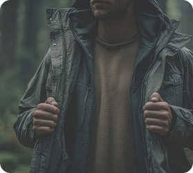
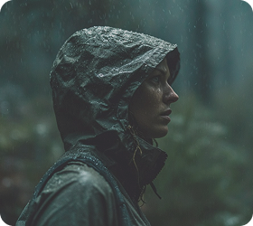

Одежда
Многослойность и защита
Как одеваться в лесу правильно
Одежда в лесу — это не только про комфорт, но и про безопасность. Температура может быстро меняться, а ветер, влажность и насекомые усиливают дискомфорт.
Многослойный подход помогает адаптироваться к условиям: согреться, защититься от влаги и избежать перегрева.
Главное — не один тёплый слой, а возможность быстро добавить или снять одежду в зависимости от ситуации.
Как работает многослойность
Базовый слой отводит влагу, средний сохраняет тепло, а внешний защищает от ветра и дождя.
Если убрать или добавить один из слоёв, можно быстро адаптироваться к изменению погоды.


Где одежда чаще всего подводит
Большинство проблем возникает не из-за отсутствия одежды, а из-за неправильного сочетания слоёв и запоздалых действий.
Когда погода меняется быстро
В лесу условия могут меняться за короткое время: солнце сменяется ветром, а сухая тропа — влажной зоной.
Важно реагировать сразу: снять слой при перегреве, добавить при остановке и защититься от ветра.
Где особенно важна защита
Защита особенно важна во влажных участках леса. Там тело быстрее теряет тепло, а одежда может намокать и хуже выполнять свои функции.
Открытые поляны с ветром усиливают охлаждение, даже если температура кажется комфортной. Ветер быстро забирает тепло и создаёт ощущение холода.
В высокой траве возрастает контакт с внешней средой — насекомыми, влагой и растительностью. Закрытая одежда здесь особенно важна.
Утром и вечером температура меняется быстрее, и без правильной одежды дискомфорт ощущается сильнее.
Где безопаснее переждать грозу
40%
Сухой лес
без ветра
30%
Участки
с плотной тенью
30%
Лес с умеренной
влажностью
10%
Открытые
пространства
Ощущение комфорта напрямую зависит от сочетания одежды и среды.
Простые правила безопасности
1. Не надевай всё сразу — добавляй слои по мере необходимости.
2. Избегай хлопка как базового слоя: он удерживает влагу и охлаждает тело.
3. Закрытая одежда защищает не только от холода, но и от насекомых, веток и травы.
Многослойность — это гибкость. Лучше иметь возможность снять или добавить слой, чем пытаться адаптироваться в одной одежде.
Спокойствие и контроль
Когда одежда подобрана правильно, ты меньше отвлекаешься на дискомфорт и лучше ориентируешься в пространстве.
Это делает прогулку спокойнее, безопаснее и позволяет лучше контролировать своё состояние в лесу.